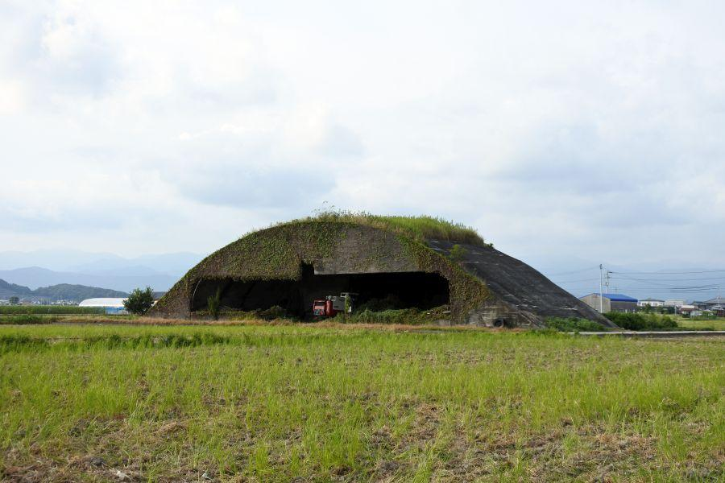
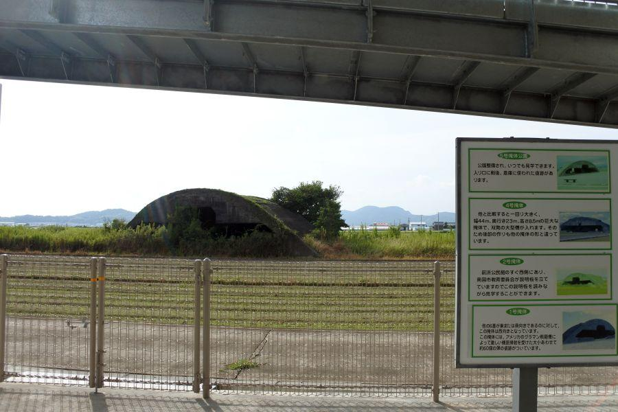
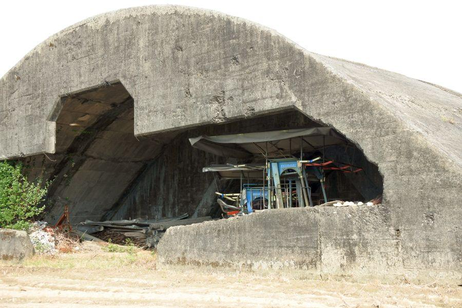
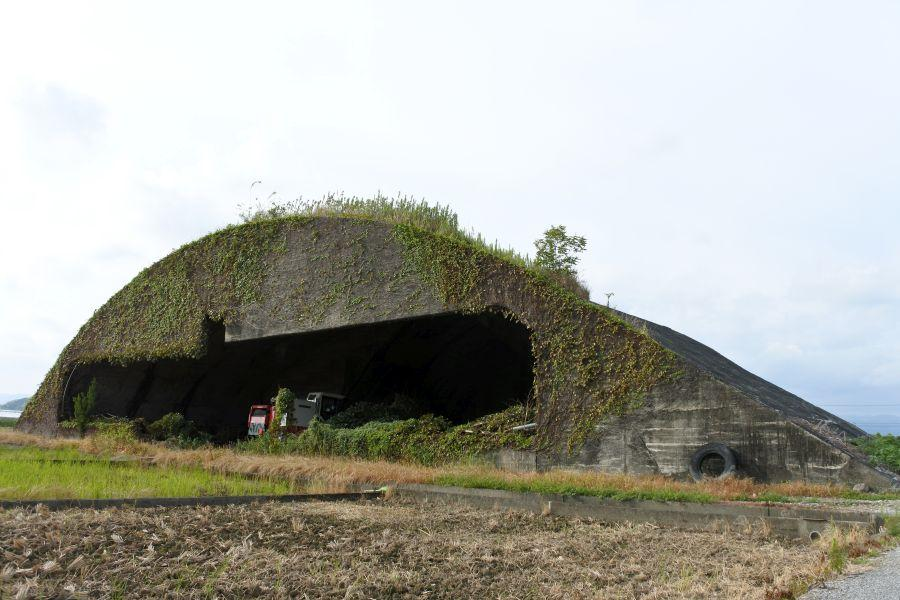

高知龍馬空港近く、かつての海軍基地の遺構 < 前浜掩体壕群 / 高知県 >

高知県南国市前浜地区。海岸に近い田園地帯を走っていると突如現れる コンクリート剥き出しの無骨な建造物。
掩体壕(えんたいごう)
と呼ばれる、戦闘機を空襲から守る防空壕。かつての高知海軍航空隊基地、現在の高知龍馬空港の近くに多数残されています。
国内最大規模の掩体壕群がある場所
掩体壕群がある南国市前浜地区は 高知龍馬空港に隣接。こちらの県道31号を国道55号方面(北)に向かって走ると、奥に見える青い標識の辺りで 空港の滑走路をくぐります。
掩体壕についての説明
地域の拠点が現在は "南国市立前浜コミュニティセンター" となっており、津波避難タワーを兼ねた建物になっています。無料駐車場、公衆トイレあり。

コミュニティセンターの背後すぐの場所にあるのが 2号掩体。草生してしまっています。
付近の散策を始めることにします。
米軍機による機銃掃射痕が見られる1号掩体
掩体壕群では最も南(海側)に位置する1号掩体。
こちらの掩体の特徴は、

坑門に米軍グラマン機による機銃掃射痕が見られる。弾痕の大きさから判断するに、12.7mm機銃でしょうか。頑強なコンクリートが砕ける破壊力。これが人体であったらひとたまりもありません。
弾痕はついても 貫通まではしていないことが、今日まで掩体が残されている理由。
戦闘機を守ることが目的のため 極めて堅固な造りとなっていることから、戦後になり不必要になったとしても 撤去が難しい。爆破するにしても多額の費用が必要となるため、道路工事等 区画整理上止むを得ない場合を除いて、放置されている事例が多いのです。
国内最大の大型掩体

4号掩体
こちらは他のものと比べて一回り大きい。幅約44mは 大型双発機も入れる大きさであり、国内に残されている掩体としては最大。
戦時中はこのように丸裸な状態ではなく、上部には草が植えられる 迷彩塗装が施される等、擬装が行われていました。
5号掩体は公園として
5号掩体は近年整備されて、詳しい説明看板等が設置されました。掩体壕の大きさ... 人物との比較をご覧ください。
戦闘機がどのような状態で保管されていたか よくわかります。
5号掩体内部
掩体壕の造り方...
砂を盛って小山を築く
↓
表面に板を敷いて、その上に鉄筋を組む
↓
上部にコンクリートを流し込む
↓
乾いたら盛った土を掘り、敷板を外す
↓
内部を整地して
↓
上部や前面を擬装して完成
5号掩体内部の天井には 敷板の模様がくっきりついていることから、板を敷き詰めてコンクリートが流されたことがわかります。
こちらは、板が用いられていることや コンクリートの質から考察するに、まだ資材に余裕があった時代のものではないでしょうか。
粗いコンクリートにムシロの跡
7号掩体
戦後 道路・水路敷設の際に後部が打ち抜かれて、内部に軽自動車が通行できるくらいの幅の道路が通っています。
特徴・見どころが数多い掩体壕。
掩体前面に成長したビワの木が顔を出しています。
内部には補強のための柱がいくつも立てられて、少々痛々しい印象。
それもそのはず、コンクリートが粗雑な上 敷板が用いられず、模様からムシロ(藁)を敷いた上にコンクリートを流したと思われます。
そのため内部天井が隙間だらけ。これでは強度的に問題があると言わざるを得ません。
コンクリートの質や ムシロの跡などから想像するに、掩体が造られた時代が新しく(＝戦争末期)、相当 資材に困窮していたのではないでしょうか。もしくは急造品。
一応 鉄筋が用いられていることが 剥き出しになった部分からわかりますが、「え、これ？」というような細い鉄筋が危うい印象を受けます。
寺の鐘や家庭用の鍋までもかき集めて 鉄を確保していた戦争末期。資材が不足してくると鉄筋さえ用いられず 竹を使用した 「竹筋(ちっきん)コンクリート」 の建造物さえありました。
軍用施設では防御性から 竹筋はあまり用いられなかったようですが、古いコンクリート橋には 基礎に竹を用いたと噂される鉄道橋等が 全国にいくつか残されています。
続き
2017,12/11 四国にもあった特攻部隊 < 白菊隊 / 高知・徳島>
前浜掩体壕群
< 自家用車 >
高松駅から 約2時間、129km
高知駅から 約30分、18km
高知龍馬空港から 約10分、3km
< 鉄道 >
土佐くろしお鉄道ごめんなはり線 立田駅下車 徒歩約50分、3.5km
< 徒歩 >
高知龍馬空港から 約30分、2.7km
※ 主な地点からの最速・最短距離